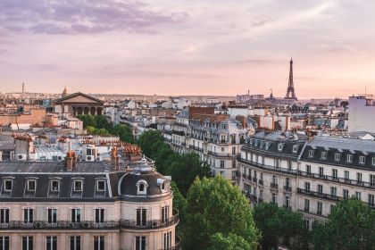
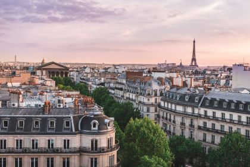

Home
A minha cidade é muito linda!!!
Paris, a capital da França, é famosa por sua rica história, cultura vibrante e monumentos icônicos, como a Torre Eiffel e o Museu do Louvre. Conhecida como a "Cidade da Luz", Paris é um centro de arte, moda e gastronomia, atraindo milhões de turistas todos os anos. Com seus encantadores cafés, ruas de paralelepípedos e uma atmosfera romântica, a cidade oferece uma experiência única que combina tradição e modernidade.
Acede à: Wikipedia